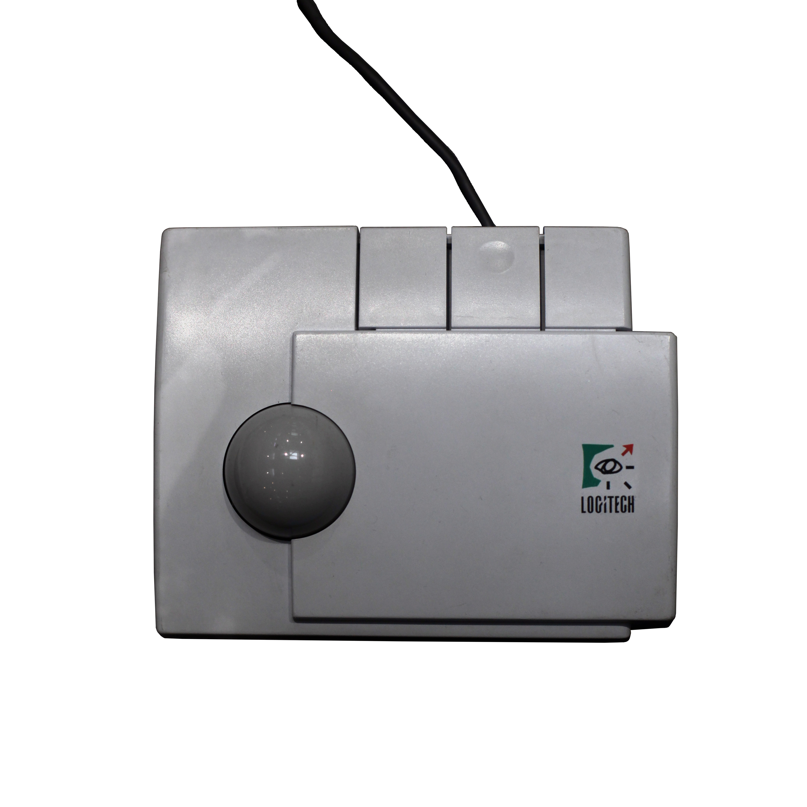

Logitech TrackMan (1989)
The first thumb-operated trackball, the grammar laptops would borrow

Overview
A trackball is an upside-down mouse: the ball rolls in place while the device stays still. The Logitech TrackMan, introduced in 1989, made the decisive ergonomic move of leaving the ball in a fixed cradle and driving it with the thumb, so the palm and the other fingers could rest. Earlier trackballs normally required the whole hand to roll a larger ball, sometimes with the wrist held up; the TrackMan collapsed that motion into a single, strong digit.
It is a landmark in the history of pointing devices precisely because its operator grammar — a stationary ball, a resting hand, a single busy thumb — became the template that portable computers spread through the 1990s, long before trackpads and pointing sticks were the norm. The museum holds no other artifact that reassigns the pointing job from the whole hand to one finger in quite this way.
Deep dive
The TrackMan's entire point is a division of labor. On a finger trackball the ball sits at the fingertips and the hand hovers; on a mechanical mouse the whole arm drags across a desk. The TrackMan parked a thumb-sized ball at the edge and let it be turned by the strongest digit, with wrist and palm supported. It is a pointed answer to an ergonomic question — how to move the cursor without lifting the arm or flexing the wrist — and it produced the gesture that two decades of laptops borrowed.
By keeping the device stationary, the TrackMan removed the biggest fatigue cost of a conventional mouse: the arm reaching out across the desk. It was remembered, in the same way the DataHand and other ergonomic keyboards were, as relief for repetitive strain. The interaction is deliberate, small, and repeated thousands of times a day — a rhythm set beside the heavier, larger gestures of the museum's other input devices.
The TrackMan became a defining input product of its era and seeded both the ergonomic trackball and mobile thumb-input that followed. In the reckoning of input-device history, the 'thumb ball' is one of the canonical pointing families — and this is where it started. No other entry in the museum asks a single finger to take over pointing, making the TrackMan a clean, image-rich, commercially-deployed counterpoint to the museum's whole-hand input devices.